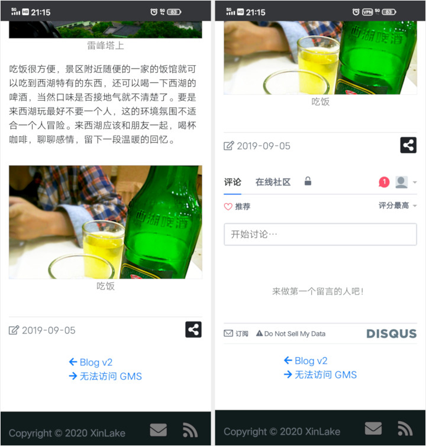

这是第三次站点更新，刚开始是 Hexo 和默认模板定制，然后切换到了 Hugo 并用 Bootstrap 开发模板 Blog v2，这一次是在 v2 的基础上做改进。Web 页面模板的更新不像软件那样有着明确的版本号和意义，页面模板的变动很多是展现形式上变动，我觉得用 v2.1 这种宽泛的版本或代号可以形容改动量。当然了，最大的变化就是启用了新的域名。
买下这个域名到现在有半年多时间了，本来打算五一假期启用新域名，不过新名称总有着一种新开始的展望，于是就做了一次升级，但是升级工作没做完五一假期就结束了，随即把升级的事情安排到了十一，今年的国庆中秋有八天假期，这个时间足够开发一个静态网站了。
设计了新的首页面，现在首页可以看到最近的文章还有开发的东西，有新的变化都会在首页呈现。关于内容也移到了首页，被放到了页面的底部，原先的 Timeline 拿掉了，站点变化可以通过 Blog 标签来追踪。博客移到了 Posts 菜单下，当然，首页的最新文章可以直接打开。菜单上还有个博客目录 Archive，这里可以检索到所有文章。
出于加载速度的原因，我把评论系统换成了全球广泛使用的 Disqus，其实我对来必力的看法是正面的，它是少有的自有灵魂的产品。现在评论是国际网络下的专属内容，页面在国内通用网络下不加载评论，而在国际网络下你会看到评论互动。

左边通用网络，右边国际网络
细节就不壹壹介绍了，有一些变化不明显，像文章版面的宽度变小了，这样阅读体验会更好。有一些优化你可能感受不到，像页面插图下方的 Label 之前是靠页面 JS 生成，而现在是一步到位模板直接渲染出带 Label 的插图。总之是坚持技术正确和先进，很高兴认识你！